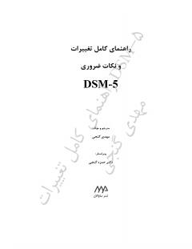

EODSM-5 qo'llanmasidagi asosiy o'zgarishlar va yangilanishlar bo'yicha qo'llanma.
Ushbu kitob DSM-5 qo'llanmasiga kiritilgan asosiy o'zgarishlar va yangilanishlarni tahlil qiladi. Muallif Mehdi Ganji ruhiy kasalliklarni tashxislashdagi yangi mezonlar va ularning klinik ahamiyatini batafsil yoritib beradi.